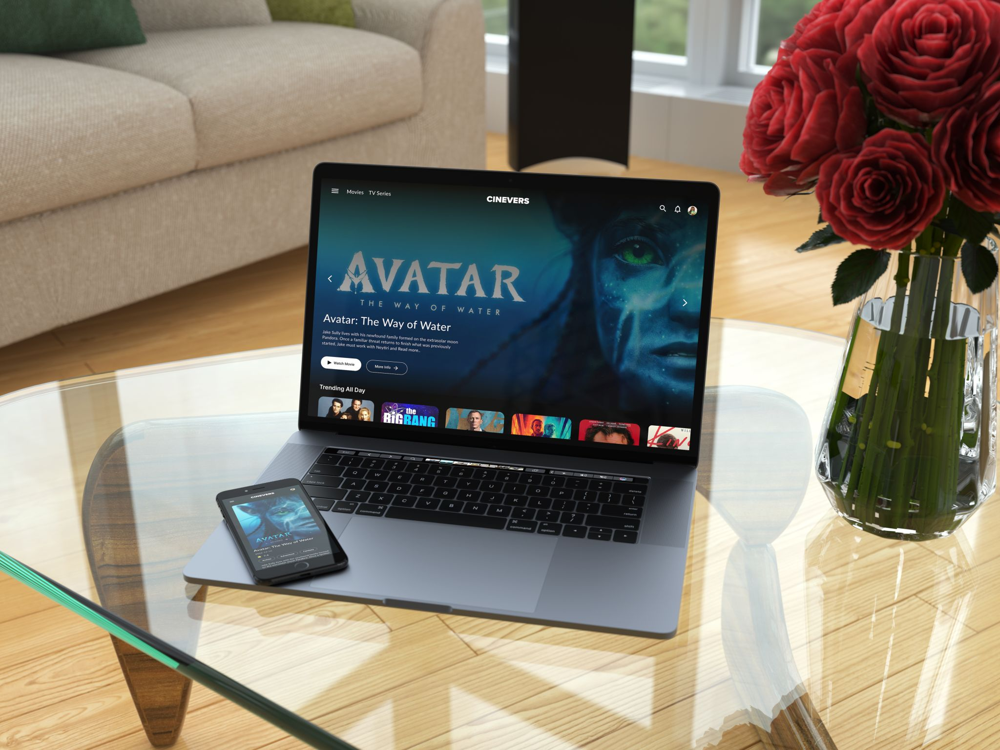
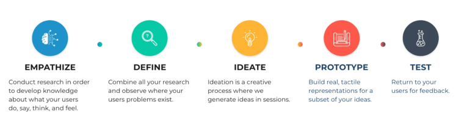
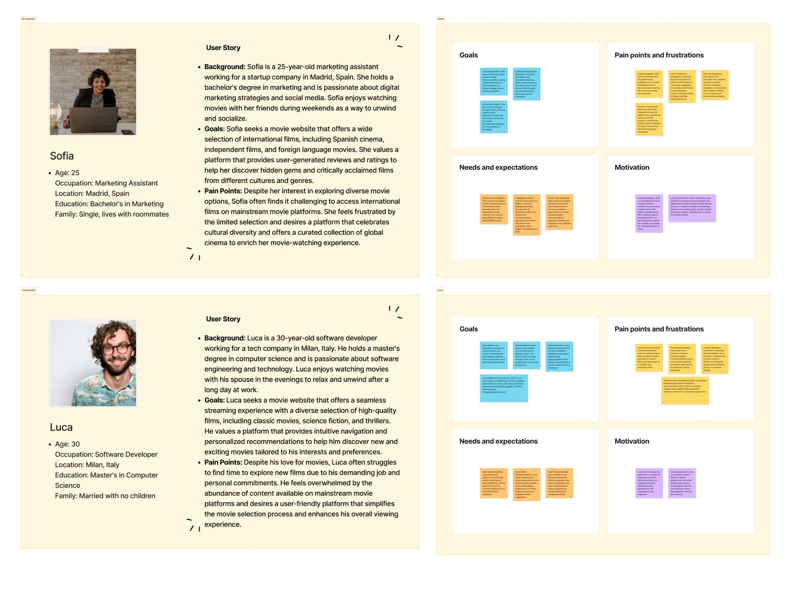
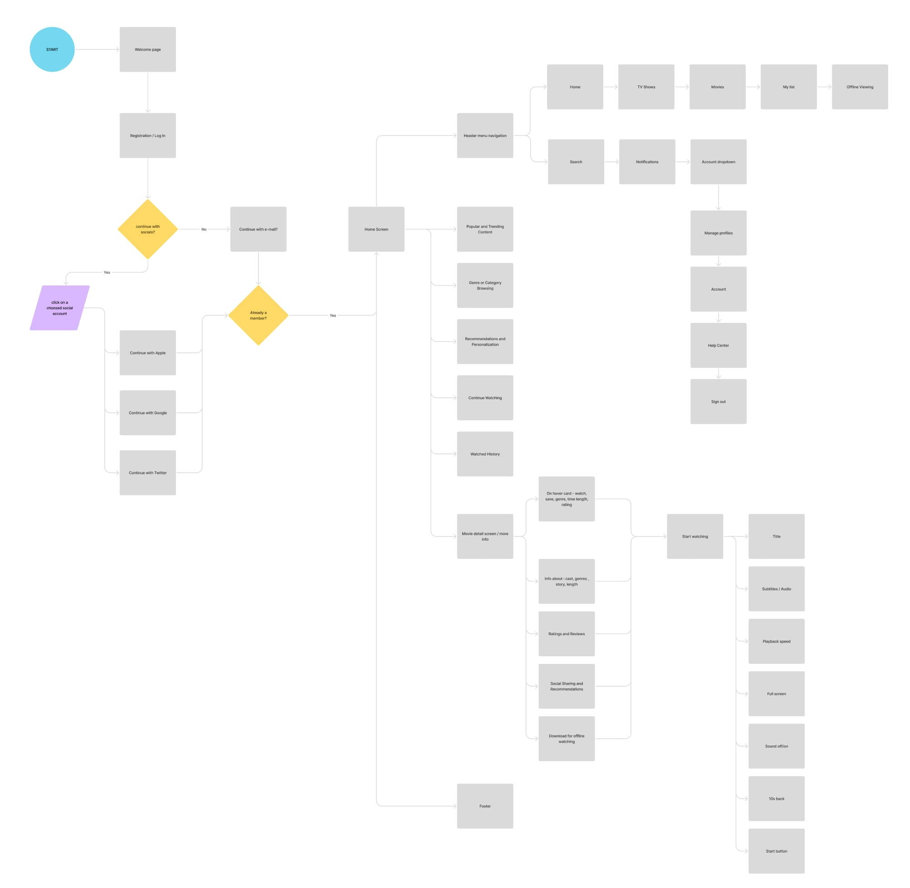
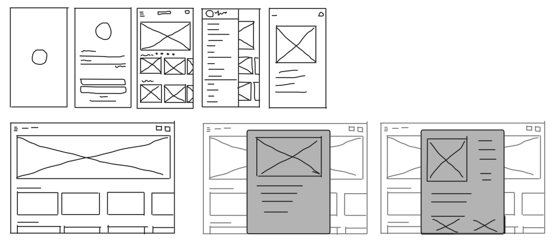
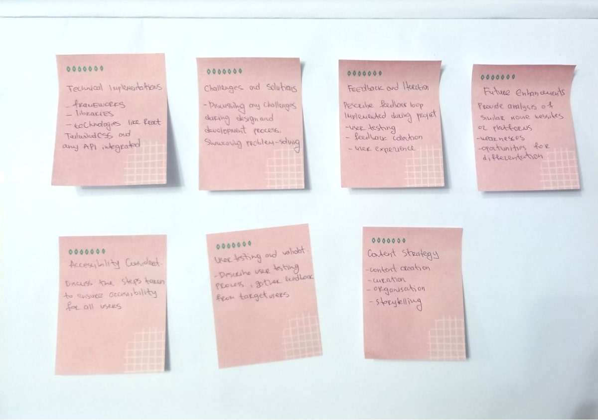
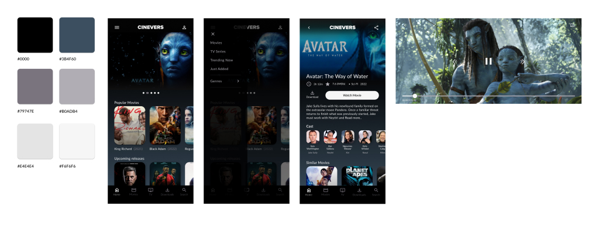
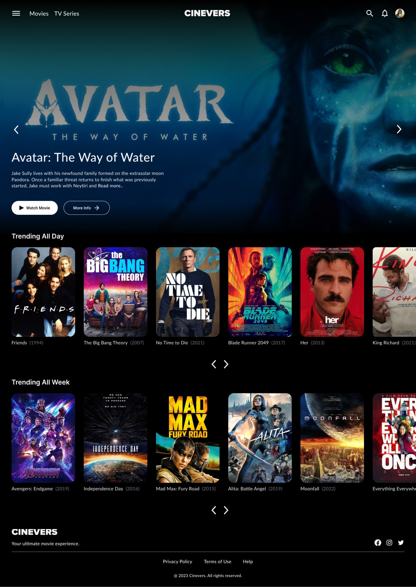
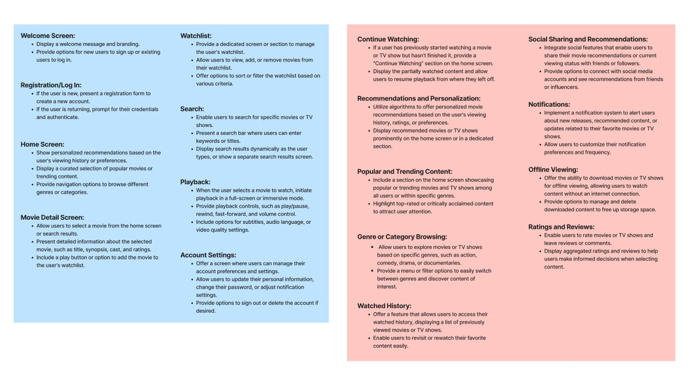

Role
Design and frontend development
Type
Personal project
Built with
React and Tailwind CSS
01
Cinevers is a personal project inspired by my interest in movies and TV shows. I wanted to create a website where people can explore different titles, discover something new to watch and easily find information about their favorite movies.
The project combines my interest in design with frontend development. I worked on the visual design and built the website using React and Tailwind CSS, while connecting it to the TMDB API to display movie and TV show information.
Cinevers is still a work in progress, but it has been a great opportunity to explore new ideas and work with real movie data.

02
I worked on this project on my own, taking care of both the design and frontend development.
I started by thinking about how the website should look and how users would explore its content. I worked on the layout, colors, typography and overall visual style, with the aim of creating an interface that feels simple and easy to navigate.
After that, I started building the website with React and Tailwind CSS. I created reusable components, connected the TMDB API and worked on the different pages and features.
03
I started by exploring existing movie websites and platforms to see how they organize and present their content.
I paid attention to how users browse movies, search for specific titles and find details about what they want to watch. I also looked at different visual styles and layouts to get ideas for Cinevers.
This helped me decide what information should be easy to access and how to keep the browsing experience simple.

04
I considered different types of people who might use the website, from users who already know what they want to watch to those who are simply looking for something new.
Thinking about these different needs helped me decide which features to focus on, such as browsing movie collections, searching for titles and viewing detailed information about each movie.

05
I mapped out the main ways users would move through the website.
The main focus was to make it easy to go from the homepage to a movie, explore its details or search for something specific. Planning these flows helped me understand how the different pages should connect and how users could move between them.

06
Before moving into the actual design, I explored different layouts and ideas through sketches.
I experimented with how movie cards, images and information could be presented, and how the main sections of the website should be organized. This gave me a clearer direction before creating the final designs.

07
I also spent time exploring ideas for the overall look and feel of Cinevers.
I wanted the website to have a visual style that fits the world of movies while keeping the interface clean and easy to use. I explored different colors, layouts and ways of presenting movie content before deciding on the final direction.

08
For the final design, I focused on creating a visual experience that makes browsing movies and TV shows enjoyable and straightforward.
Movie posters and images play an important role in the interface, helping users discover titles at a glance. I also focused on keeping the layout organized, so users can easily find the information they are looking for.
The design was created with different screen sizes in mind, making sure the website remains easy to browse on both desktop and mobile devices.


09
Once the design direction was ready, I started building Cinevers using React and Tailwind CSS.
I used React's component based structure to create reusable elements and keep the code organized. Tailwind CSS helped me style the interface and build layouts that adapt to different screen sizes.
One of the main parts of the development was connecting the website to the TMDB API. Using Axios, I fetched movie and TV show data and displayed it throughout the website.
I also worked on different pages and features, including:
A place to explore movies and TV shows.
A page with more information about each selected title.
Allows users to search for specific movies and shows.
Helps users explore titles based on selected categories or filters.

For navigation, I used React Router to connect the different pages and make moving through the website feel smooth.
Working on Cinevers gave me the chance to practice building a complete frontend project, from the initial design ideas to connecting an external API and creating the final interface.
You can check out the project and its code on GitHub:
Cinevers on GitHub